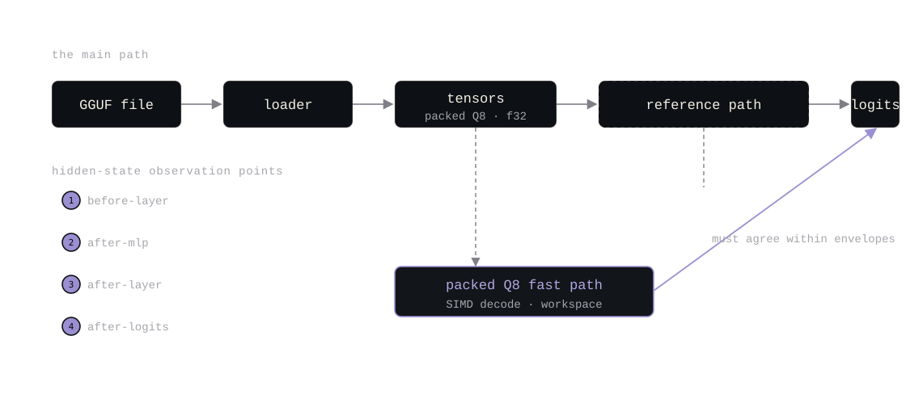
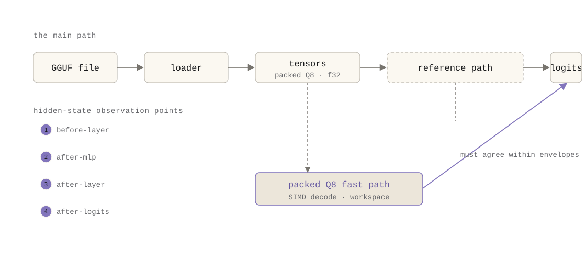

complete draft with explicit citations to repository artifacts. the trace and extraction
artifacts described here were produced live on 2026-08-04 from the release binary and are
recorded in artifacts/benchmark-v01/part1-legibility.md. the figure is embedded
as SVG (dark/light theme variants under figures/).
extracting a tensor is the easy part. knowing what it means, which layer, which position, which execution route, which kernel, is the engineering.
Ember's reason to exist is a research question about Arabic morphology: where in a transformer are roots and patterns represented, and why does representational availability sometimes fail to produce generation behavior? every form of that question starts with the same act: take a tensor out of a running model and say something about it. the act is only meaningful if the tensor's origin is known exactly, which model, which layer, which token position, which execution path, which kernel, and what came before it.
a hidden-state dump without that context is not evidence; it is a number. the central claim of this post is the v0.1 release's: a hidden-state dump is not useful unless its exact semantic and numerical origin is known. v0.1 built the engine that makes that origin explicit.
the naive approach is to instrument at the end: run the model, intercept the outputs, write the tensors to disk, and let the researcher sort out what they are. it produces files quickly and meaning slowly. three things are lost:
the v0.1 loader (CHANGELOG.md, v0.1: GGUF v3 loading for F32/F16/BF16/Q8_0;
mmap-backed Q8_0 weights; SIMD decode kernels; tiled prefill) knew everything a researcher
needs: the dtype, the shape, the layout, the file the tensor came from. the problem was that
this knowledge stopped at the loader boundary. the extraction path had to re-discover it, and
the GGUF format makes that re-discovery genuinely hard:
[in, out] with the first dim
contiguous; linears need a row-major fixup and embeddings a dims-swap, and a tied LM head
needs a real transpose, get any of these wrong and every downstream tensor is silently
corrupted (repository gotchas, documented against the loader in
docs/architecture.md and the loader's layout helpers).the consequence: obtaining a tensor and knowing what it means are different problems, and the second one is the actual engineering.
v0.1 kept a deliberately unoptimized reference execution path as the correctness oracle
alongside the packed Q8 fast path: same model, same inputs, generic kernels, explicit
intermediates. the two paths must agree on greedy output within the recorded envelopes
(controlled a/b regression tests, trace-fingerprint and hidden-state tests ,
CHANGELOG.md v0.1). the reference path is not a fallback; it is the definition of
what the fast path is allowed to change.
on top of that: KV-cached generation with deterministic greedy decoding, structured operation
tracing, and hidden-state extraction (CHANGELOG.md v0.1). "deterministic" here is
semantic determinism: temperature 0 with a fixed seed produces the same tokens and the same
hidden states on the same binary, not necessarily the same wall-clock times.


the trace is a per-operation journal. on 2026-08-04, the release binary traced a 6-token
prefill on Llama-3.2-1B Q8_0 into 275 events, each carrying the op name and kind, the layer
index, input/output shapes and byte counts, duration, and an estimated FLOP count
(artifacts/benchmark-v01/part1-legibility.md section 2):
{"duration_ns": 5896, "estimated_flops": 0, "input_bytes": 49152,
"input_shape": [6, 2048], "layer": 18446744073709551615,
"name": "embedding", "op_kind": "Embedding", "output_bytes": 49152}every layer, projection, norm, and attention op appears with its shapes and bytes; the decode phase is traced per step. the trace is the engine saying what it did, the origin of every tensor it produced, in order.
the extraction path writes that origin next to the tensors. a direct-mode extraction on the
same model produced a run directory with 16 per-layer shards (one 2048-dim f32 row per layer,
the final prompt position) plus a manifest that records the model architecture, tokenizer,
backend, sample hashes, config hash, and checksums (artifacts/benchmark-v01/part1-legibility.md
section 3). the artifact is self-describing: schema_version, layout,
tensor_contract, dtype, output_format, and the full
model/tokenizer records are in the manifest, not assumed.
v0.1 also established the vocabulary the whole series uses
(docs/validation.md): smoke (the command ran) < golden logits (output compared
against a trusted reference) < activation-reference checks (internal states compared) <
probes (decodability) < interventions (causal use). each rung is a different claim. v0.1
shipped golden-logit and trace-fingerprint tests for the paths it supported; the ladder is
what makes "supported" distinct from "numerically validated on every row".
--arch default silently fell back to gpt2 when a model needed an explicit
architecture, a trap that shipped and was only fixed later with --arch auto.knowing where a tensor came from is observation. the next step is changing it and observing the consequence, which requires the capture, patch, and restore machinery of v0.2.